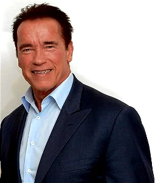

Arnold Schwarzenegger (1947) é um ator, político e empresário austro-americano. Ex-fisiculturista, foi herói de diversos filmes de ação, entre eles: “O Exterminador do Futuro” e “Conan, o Bárbaro”. Foi o 38º governador do estado da Califórnia permanecendo no cargo por dois mandatos, entre 2003 e 2011.Ganhou fama internacional, tornando-se um ícone de filmes de ação de Hollywood, notável pelos papéis principais em filmes como Conan the Barbarian e The Terminator.[1][4][5] Foi apelidado de "Carvalho Austríaco" e "Carvalho Estírio" em seus dias de fisiculturista, de "Arnold Strong" e "Arnie" durante sua carreira e mais recentemente como "Governator" - um portmanteau de palavra Governor (Governador, em português) e a palavra Terminator (Exterminador, em português), um de seus papéis.[6]
Filiado ao Partido Republicano,[7] foi eleito pela primeira vez em 7 de outubro de 2004, com um recall especial para substituir o então governador da Califórnia Gray Davis. Schwarzenegger foi empossado em 1º de novembro de 2004, para servir o restante do mandato de Davis. Foi então, reeleito em 7 de novembro de 2006, para servir um mandato completo como governador, derrotando o democrata Phil Angelides, que era o tesoureiro de Estado da Califórnia na época. Ele tomou posse para o segundo mandato em 5 de janeiro de 2007.[8] Em maio de 2004 e 2007, foi nomeado como uma das 100 pessoas que ajudaram a moldar o mundo, pela revista Time.[9][10] Em 3 de janeiro de 2011 foi sucedido pelo democrata Jerry Brown.

CARREIRA DO MONSTRO
Arnold Schwarzenegger é um ator, cineasta, empresário e político. Famoso por filmes de ação, Schwarzenegger foi duas vezes eleito governador da Califórnia, pelo partido Republicano. Outra vertente da carreira de Arnold Schwarzenegger é a de fisiculturista – ele começou na área aos 15 anos de idade.
Quantos Mister Olympia tem o Arnold?
Aos 20 anos foi premiado com o título de Mr. Universe e, ao longo de sua carreira, venceu o concurso Mr. Olympia um total de sete vezes.